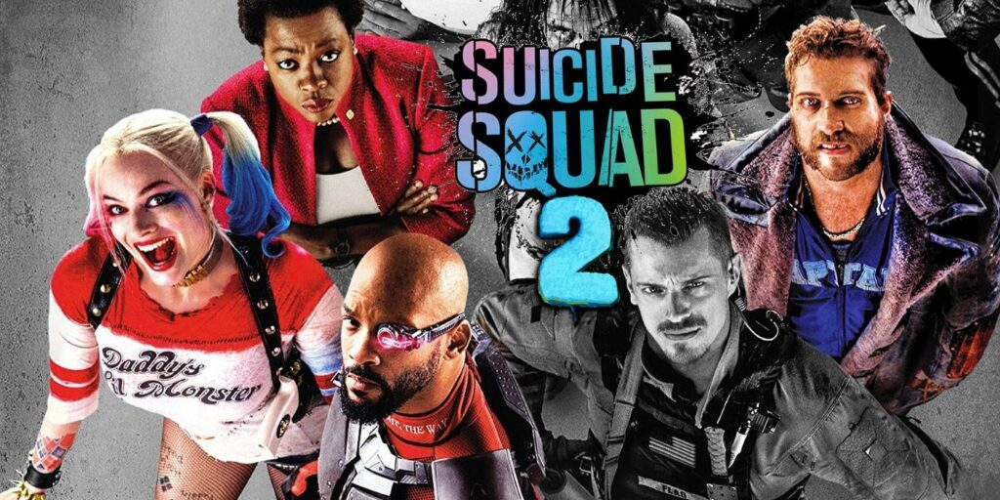

O filme "Esquadrão Suicída" ganha novo trailer explosivo

O Esquadrão Suicida, novo filme que traz o time de supervilões da DC Comics para os cinemas, ganha um segundo trailer oficial. Com muitas cenas de ação, o trailer deixa o público com um gostinho de quero mais. Dirigido e roteirizado por James Gunn (“Guardiões da Galáxia”), o longa chega às telonas brasileiras dia 5 de agosto.
Com um elenco estelar, o filme reúne Margot Robbie, Idris Elba, John Cena, Alice Braga, Joel Kinnaman, Jai Courtney, Peter Capaldi, David Dastmalchian, Viola Davis, entre outros grandes nomes.
Veja outros filmes que serão lançados a seguir:
Nosferatu
O ano começa com o novo espetáculo de terror de Robert Eggers (A Bruxa, O Farol). Desta vez, o cineasta traz uma reimaginação do clássico vampiro, com Bill Skarsgard, Lily-Rose Depp, Willem Dafoe e mais.
Lobisomem
Da mente de Leigh Whannell, criador da saga Jogos Mortais e diretor de O Homem Invisível (2020), chega uma nova versão do monstro clássico.
Capitão América: Admirável Mundo Novo
Um ano não passa direto sem filmes da Marvel, certo? E o ano do estúdio começa com a mais nova aventura de Anthony Mackie como Sam Wilson.